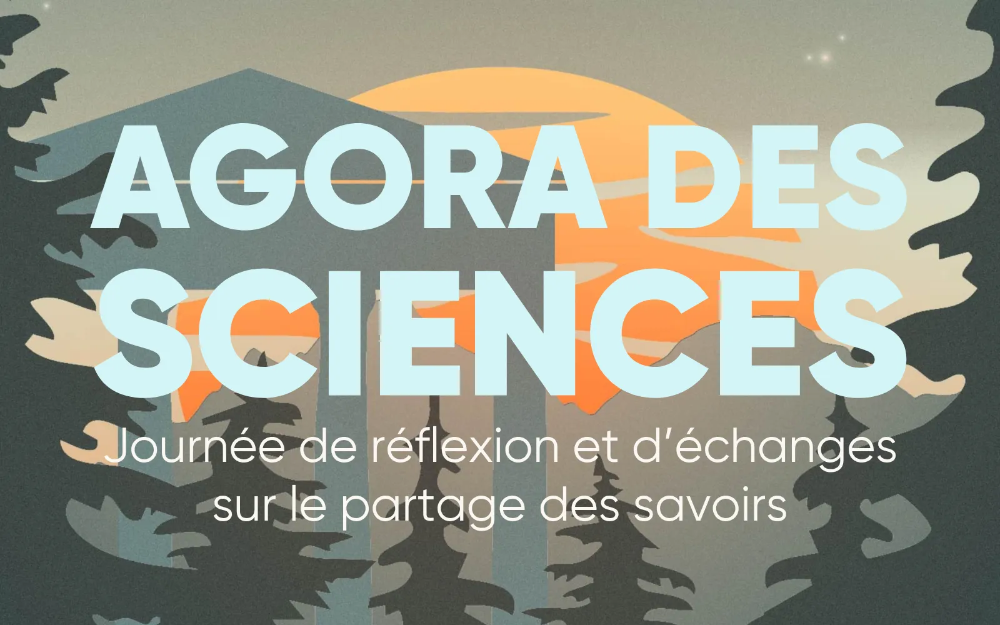
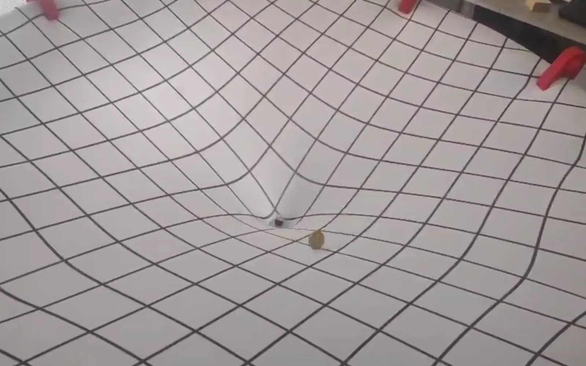
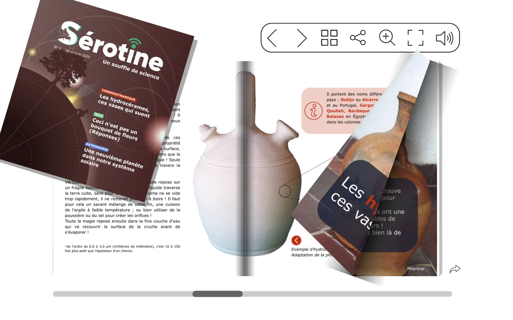
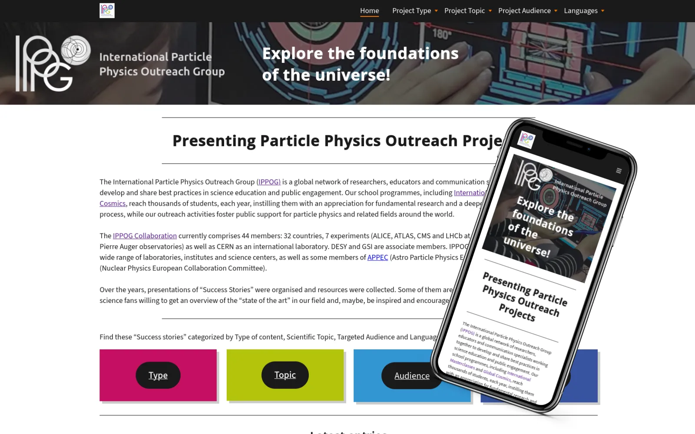
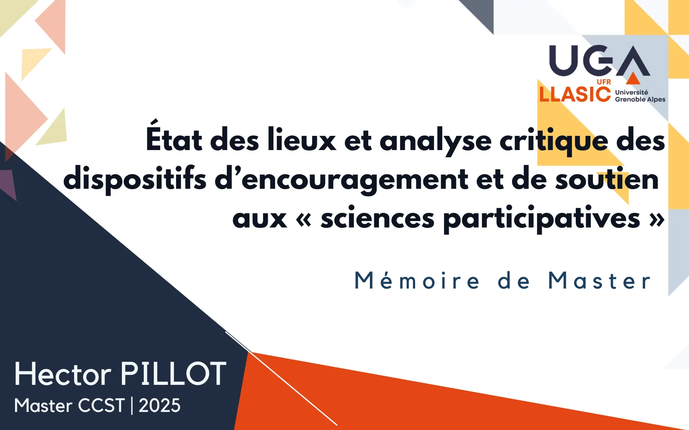
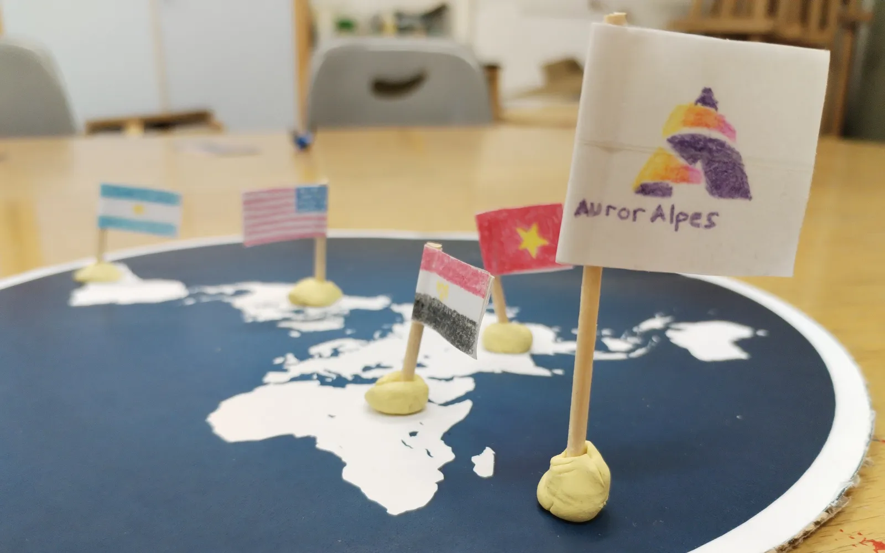
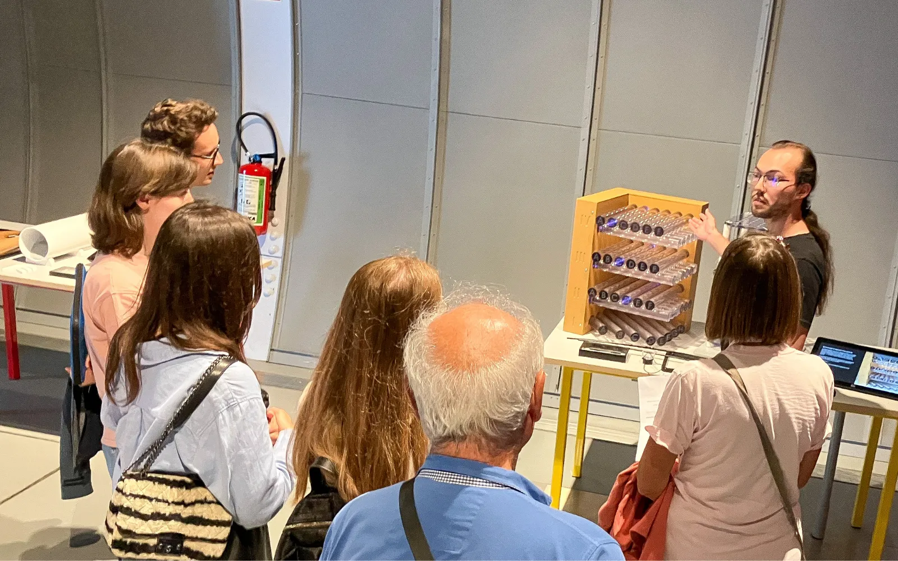
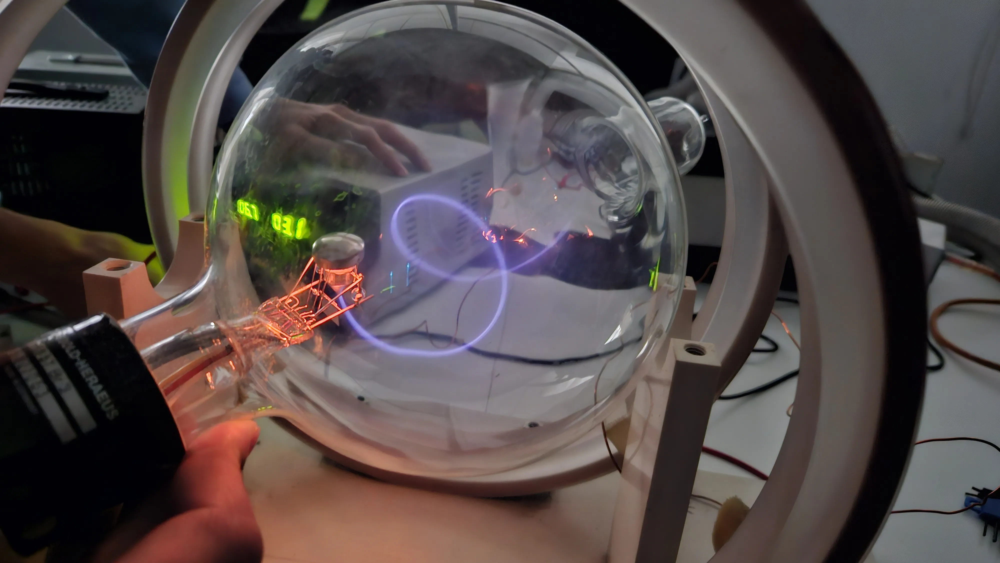

February - July 2026

Organizing a one-day event to bring together people involved in science communication and outreach, with the aim of reflecting on and discussing ways to share knowledge by exchanging ideas and perspectives.
A selection of projects, from scientific writing to exhibition design. Filter by topic, browse the gallery, or switch to the timeline view.

Organizing a one-day event to bring together people involved in science communication and outreach, with the aim of reflecting on and discussing ways to share knowledge by exchanging ideas and perspectives.

The Relativity Web is an educational tool designed to explore general relativity. It consists of a Lycra sheet that stretches under the weight of an object, providing an analogy to the spacetime described by Einstein’s theory of general relativity.

Sérotine is a popular science web magazine that covers a variety of topics that are rarely discussed. It encourages a critical mindset in a lighthearted or offbeat tone. Its goal is to make science fun while maintaining high standards of scientific rigor.

The « resources portal » was created in 2025 by IPPOG, the international collaboration for outreach and science communication in particle physics, at the request of the high-energy physics community.
It serves as a showcase highlighting the community's outreach and science-communication projects.

For several years now, we have observed the widespread adoption of the terms “citizen science” and “participatory research,” to the point where these words seem to have become part of everyday vocabulary. The purpose of this master thesis is to untangle the various concepts that appear to be intertwined in a confusing media discourse, as well as to examine the measures that have been implemented over the past several years to develop participatory science.

“The Little Skeptic's Toolkit” is a serious game. The goal of the activity is to apply the scientific method to the flat Earth theory.

Internship with the exhibition team of the CERN Science Gateway, CERN's science and education centre. I designed short demonstrations for the exhibits and trained the guides to deliver them.

Participation in the Space Weather Village with the AurorAlpes association during European Space Weather Week (ESWW24), aimed at the general public and school groups.